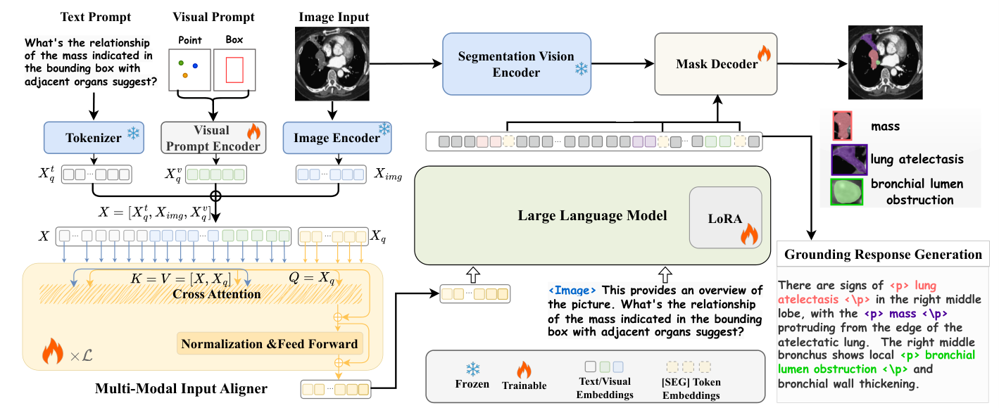
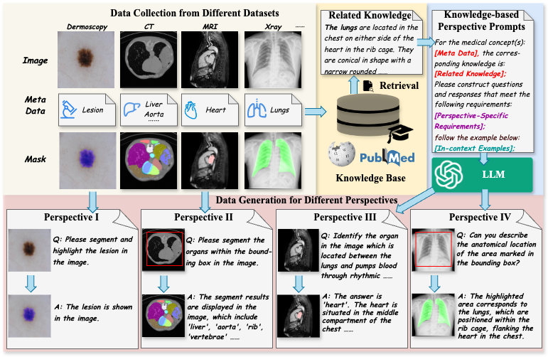

Visual referring input
Image, text, and visual-prompt embeddings are aligned through cross-attention so that the language model can focus on the region specified by the user.
CVPR 2025
1Peking University · 2Peking University · 3National Engineering Research Center for Software Engineering
4Peking University Sixth Hospital · 5Augusta University · 6Peking University First Hospital
MIMO is a unified medical vision-language model designed to connect language with specific image regions. It accepts textual instructions together with optional point or bounding-box prompts, and produces natural-language responses whose medical concepts are aligned with pixel-level segmentation masks.
To train these capabilities, we introduce MIMOSeg, a large-scale medical multimodal dataset spanning basic instruction following and complex question answering with multimodal input and output.
MIMO combines an image encoder, visual prompt encoder, multimodal input aligner, large language model, segmentation encoder, and mask decoder.

Image, text, and visual-prompt embeddings are aligned through cross-attention so that the language model can focus on the region specified by the user.
Special segmentation tokens connect medical entities in the generated response to the mask decoder, producing phrase-aligned pixel masks.
MIMOSeg covers eight medical imaging modalities: CT, MRI, dermoscopy, PET, endoscopy, X-ray, ultrasound, and fundus photography.

| Perspective | Task | Input | Output | Samples |
|---|---|---|---|---|
| I | Language-guided segmentation | Image + text | Text + mask | 254,774 |
| II | Visual prompt perceiving | Image + text + point/box | Text + mask | 254,584 |
| III | Response–segmentation alignment | Image + question | Grounded answer + mask | 182,498 |
| IV | Visual prompt assisted QA | Image + question + point/box | Grounded answer + mask | 180,734 |
MIMOSeg is available on ModelScope.
@InProceedings{Chen_2025_CVPR,
author = {Chen, Yanyuan and Xu, Dexuan and Huang, Yu and
Zhan, Songkun and Wang, Hanpin and Chen, Dongxue and
Wang, Xueping and Qiu, Meikang and Li, Hang},
title = {MIMO: A Medical Vision Language Model with Visual Referring
Multimodal Input and Pixel Grounding Multimodal Output},
booktitle = {Proceedings of the IEEE/CVF Conference on Computer Vision
and Pattern Recognition (CVPR)},
year = {2025},
pages = {24732--24741}
}